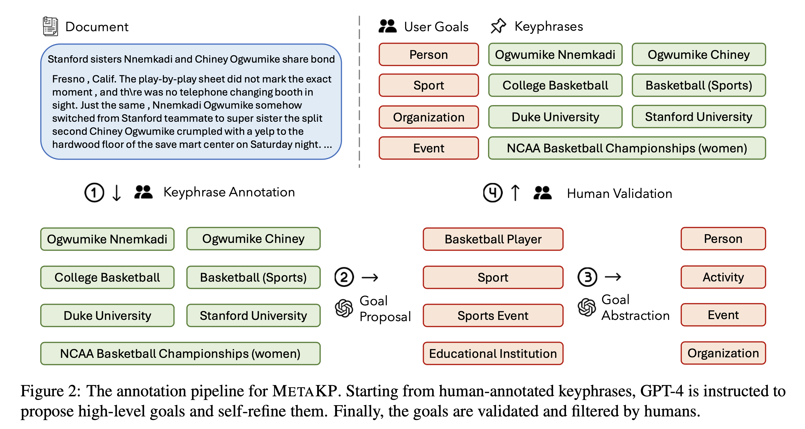
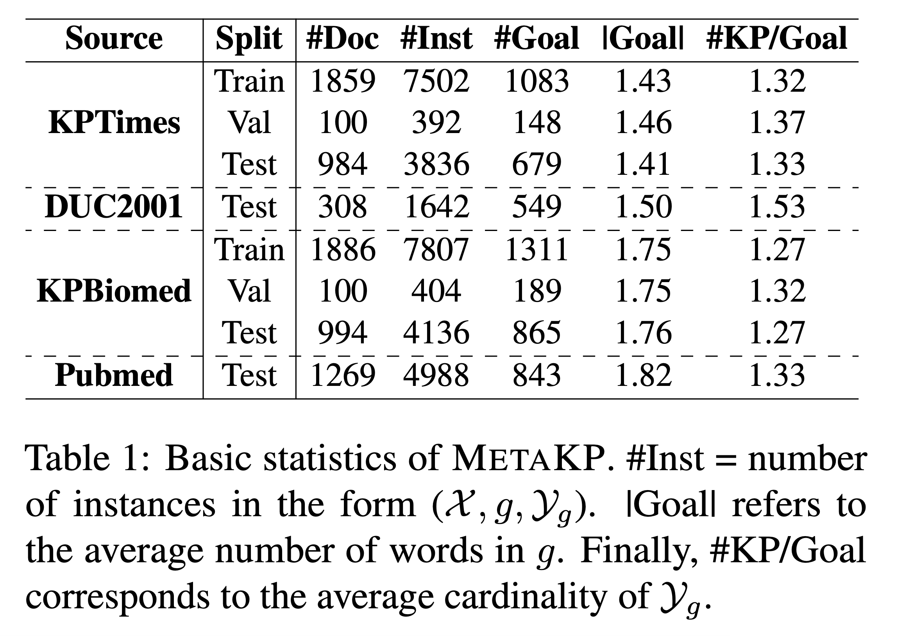
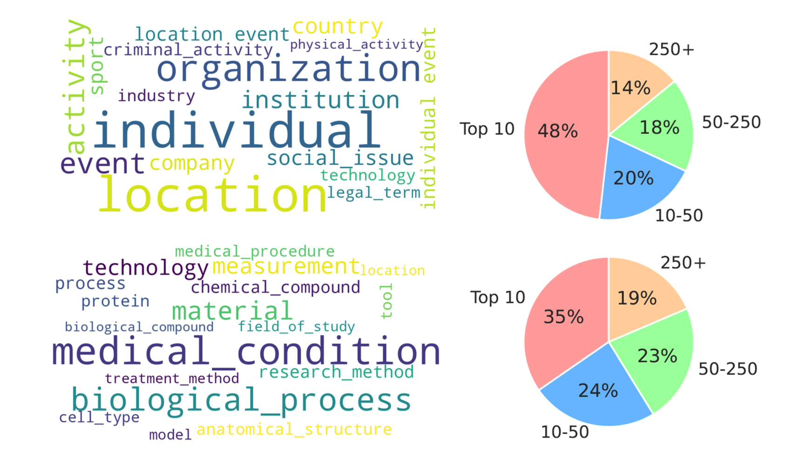
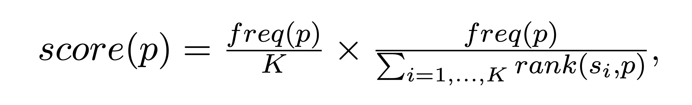
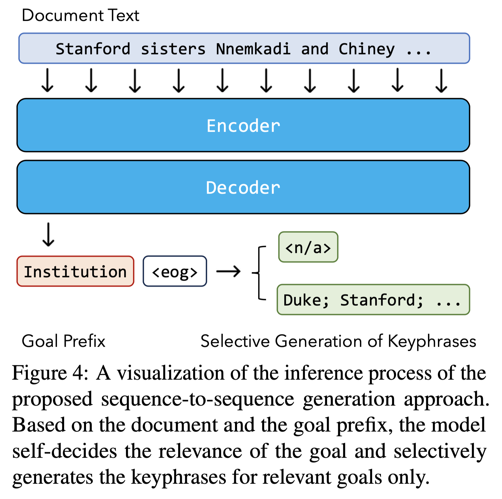
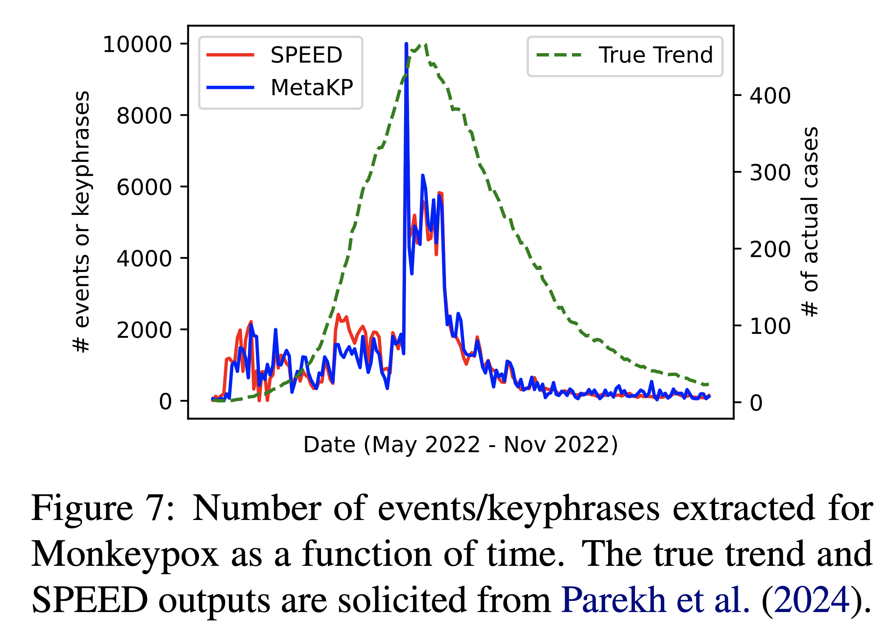

Results
Our experiments reveal the following insight:

We provide more analyses on both methods as well as qualitative examples in the paper.
We introduce on-demand keyphrase generation, a novel paradigm that requires keyphrase predictions to conform to specific high-level goals or intents. We release MetaKP, a large-scale benchmarking dataset covering four datasets, 7500 documents, and 3760 goals from the news and biomedical text domain.
We build a scalable labeling pipeline that combines GPT-4 and human annotators to construct high-quality goals from keyphrases.
We run the pipeline on KPTimes, DUC2001, KPBiomed, and Pubmed to collect a diverse dataset covering two domains, 7500 documents, and 3760 goals.
 We develop both unsupervised and supervised methods to perform on-demand keyphrase generation.
For the unsupervised approach, we design a self-consistency prompting approach that leverages the frequency and rank information from the samples collected from large language models (LLMs). Concretely, we collect K samples, each of which consists of a sequence of keyphrases. Then, each phrase is scored using the following formula.
For the supervised method, we design a multi-task learning approach to fine-tune a sequence-to-sequence pre-trained language model to self-determine the relevance of a goal and selectively generate keyphrases.
Our experiments reveal the following insight:
We provide more analyses on both methods as well as qualitative examples in the paper.
Finally, we demonstrate the potential of on-demand keyphrase generation as a general NLP infrastructure. Specifically, we use event detection for epidemics prediction as a test bed. By constructing simple goals from event ontology and attempting to extract relevant keyphrases from social media text, we show that an on-demand keyphrase generation model has the potential to extract epidemic-related trends similar to an event detection model trained on task-specific data.
@article{Repoformer,
title={Repoformer: Selective Retrieval for Repository-level Code Completion},
author={Di Wu, Wasi Uddin Ahmad, Dejiao Zhang, Murali Krishna Ramanathan, Xiaofei Ma},
url={https://arxiv.org/abs/2403.10059},
year={2024},
}